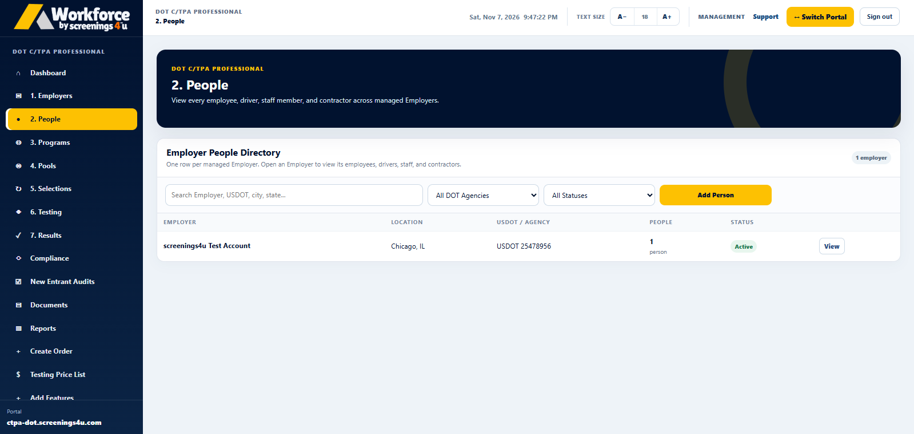

Scattered employee records
Spreadsheets, email attachments and separate files make it difficult to see the information that matters.
When people, testing, programs and records live in different places, staying organized becomes harder than it needs to be. Workforce brings these essential workflows together in software built around how your operation works.

As your operation grows, manual processes create more opportunities for missed tasks, scattered records and time-consuming follow-up.
Spreadsheets, email attachments and separate files make it difficult to see the information that matters.
Coordinating participation, testing requirements and random selections can consume valuable administrative time.
Without a shared view of testing and results, the next action is not always obvious.
Finding supporting documents and preparing relevant records becomes harder when information is fragmented.
Workforce provides one place to organize your people and the operational tasks connected to them. Different subscription workspaces give different users the tools they need.

Work through the essential steps in a consistent system instead of piecing information together.
Start with the employees, drivers or employer accounts associated with your operation.
Connect people with the programs, pools and requirements relevant to their work.

Track orders, selections and related activity as work progresses.

Access relevant results, reports and documentation when they are needed.

Select the software experience designed for your role to see its capabilities, subscription plans and checkout options.
Keep employees, testing programs, documentation and compliance-related workflows together.
Plans from $85/monthExplore Employer Software FOR PROGRAM ADMINISTRATORSManage multiple employer clients, consortium pools, testing activity, reporting and administration.
Plans from $125/monthExplore C/TPA Software FOR INDEPENDENT DRIVERSOrganize your FMCSA program information, testing, results and important records.
Plans from $74.95/yearExplore Owner-Operator PlansSubscription tiers and included functionality vary by customer type. Testing, collections and fulfillment services may be separately charged.